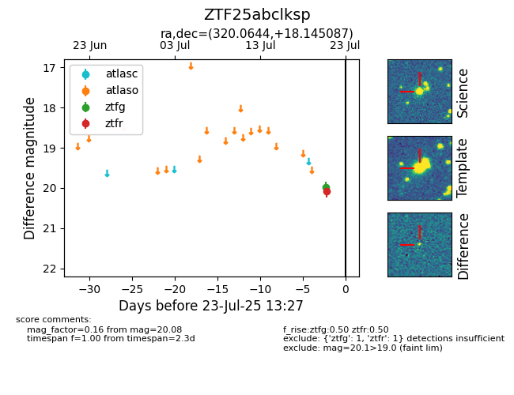

Target ZTF25abclksp at 2025-07-23 13:27, see:
FINK: fink-portal.org/ZTF25abclksp
Lasair: lasair-ztf.lsst.ac.uk/objects/ZTF25abclksp
ALeRCE: alerce.online/object/ZTF25abclksp
alt names
ZTF25abclksp (ztf,fink)
coordinates:
equatorial (ra, dec) = (320.0644,+18.14509)
galactic (l, b) = (68.3968,-21.67743)
photometry
last ztfg=19.98, ztfr=20.08
1 ztfg, 1 ztfr detections
